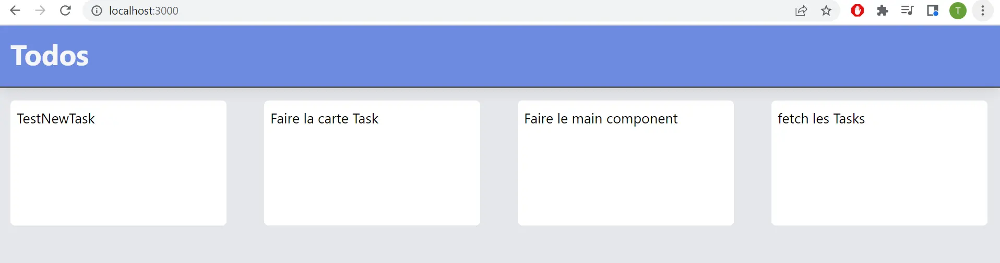

Docker
- MON
- 2022-2023
- temps 1
- Docker
- Tuncay Bilgi
Docker :
Docker est un outil qui peut empaqueter une application et ses dépendances dans un conteneur isolé, qui pourra être exécuté sur n'importe quel serveur Il est largement utiliser dans la mise en production des applications. Le MON consiste à prendre l'outil en main en suivant la doc officielle et un workshop officiel. Le but est d'en faire un maximum puisque l'on a moins de 10h sur ce MON.
Le projet est mis en place sur Windows et je ne mettrais pas la doc pour Linux ou Mac.
MON débutant
Il faut connaître :
- des bases de bash et de Linux
- l'utilisation d'un CLI (un terminal de commande)
Le Workshop :
Initialisation et premiers pas.
Il faut installer Docker depuis le site officiel.
Ensuite, on suit le workshop.
Docker permet d'empaqueter une application dans un conteneur, c'est à dire que le but est de créer, sur notre ordinateur, une boite isolée du reste du système. Cette boite va contenir le code de l'application que l'on veut mettre en production, et tout ce dont elle a besoin pour fonctionner. Ces boites doivent donc posséder leur propre système d'exploitation. Nous n'allons pas recréer ce système nous même, mais nous allons chercher une image (une copie) de ce système sur un "drive d'images" sur internet. ON se dirige donc sur DockerHub qui contient pleins d'images, par exemple, on peut y récupérer l'image d'un système Linux avec la distribution Ubuntu.
Hello World
Pour chercher une image, ici une image de la distribution Linux Fedora, on se place dans le répertoire de notre projet et on lance :
docker pull fedora latest
Ensuite, pour notre premier hello world, on va effectuer une commande Linux avec le système fedora que l'on a téléchargé :
docker run fedora echo 'hello world'
Cette commande va initialiser un container à partir de l'image fedora et va l'utiliser pour lancer un echo, puis va s'arrêter.
on reçoit donc l'echo :
hello world
On peut utiliser cette commande avec des options à chercher dans docker --help .
docker run --help //liste les commandes et les options -i //maintenir le container ouvert après l'executions des tâches -t //ouvrir un pseudo terminale -d // exécuter les taches en daemon -> en arrière plan, dans un autre terminale.
D'autres commandes importantes :
docker ps //liste tous les containers en marche docker stop [id] // arrête le container proprement docker kill [id] // force l'arrêt docker log -f [id] // renvoie tous les logs du container sur le terminale
Dockerfile
Une image est un template pour créer un container. Au lieu de simplement copier celle des autres, nous pouvons créer ou modifier les nôtres avec des Dockerfile.
On crée un Dockerfile dans le projet et on ouvre vscode dans le dossier courant :
>> New-Item Dockerfile >> code .
On crée notre Dockerfile, il va chercher l'image fedora et lancer une commande pour nous qui va installer une dépendance, ici figlet, qui permet de faire de jolies echos. Le Dockerfile ressemble à ça :
FROM fedora:latest
RUN yum install -y figlet
Enfin, on construit l'image dans le dossier courant (où il y a le Dockerfile) et on le nomme figlet :
>> docker build -t figlet .
Nous voila avec une nouvelle image figlet, que l'on peut utiliser pour instancier des containers comme au début du tutoriel!
Les dockerfiles fonctionnent avec des mots clefs tel que FROM,RUN,CMD,ENTRYPOINT.. voir la doc pour savoir à quoi ils servent.
On peut publier notre image sur le dockerhub avec une commande spéciale :
docker build -t mon_pseudo_docker/nom_image:latest .
Puis sur docker desktop on clique sur push to hub.
Conteneurisation d'un premier projet :
Lors des cours de flask, on à eu l'occasion de coder un front en React et un back en flask, nous allons essayer de conteneuriser ça. On commence à créer une image qui va créer le conteneur du front.
Le front utilise node et react.js. On écrit un Dockerfile qui cherche l'image node de dockerhub, qui va chercher les dossiers spécifiant les dépendances et qui les installes avec npm. Ensuite, on exécute la commande qui lance le serveur pour le front.
FROM node:18-slim
WORKDIR /app
COPY ["package.json", "package-lock.json*", "./"]
RUN npm install
COPY . .
EXPOSE 3000
CMD [ "npm","start" ]
On lance ensuite un container de cette image en spécifiant le port 3000 et voila, on peut aller voir notre front sur localhost:3000.
DockerCompose
Pour containériser une application, il est plus utile de découper l'applications en différentes parties et de containériser chacune des composantes et de les faire communiquer. Pour cela, on utilise un fichier Dockercompose, qui construit plusieurs containers à partir de plusieurs images et qui les relies, d'une traite.
Pour tester cela, on continue la containérisation de l'app du cours de flask.
Container Back-end
on créer un Dockerfile qui va créer l'image de l'application flask :
FROM python:latest
WORKDIR /app
COPY requirements.txt requirements.txt
COPY requirements.dev.txt requirements.dev.txt
RUN pip install -r requirements.txt RUN pip install -r requirements.dev.txt
COPY . .
EXPOSE 5000
CMD [ "python3", "-m" , "flask", "run", "--host=0.0.0.0"]
Puis on lance le container docker run -d -p 5000:5000 python-flash . On peut maintenant écouter le port 5000 et voir que tout fonctionne.
Dockercompose file
On possède maintenant deux images, une pour le front, une pour le back, on peut essayer de faire fonctionner les deux.
Pour cela on créer un Docker-composer.yml file.
version : '3' services: web : build: flask ports: - '5000:5000' environment: FLASK_ENV: development volumes : - ./flask:/app
front : build: react-todo ports : - '3000:3000'
db: image : postgres ports : - '5432:5432' environment: POSTGRES_USER : test POSTGRES_PASSWORD : test POSTGRES_DB : postgres volumes: - db:/var/lib/postgresql/data
volumes: db: driver : local
Ce fichier préparer le lancement de trois containers basées sur :
- L'image présente dans ./flask
- L'image dans ./react-todo
- L'image du nom de postgres qu'il va chercher dans le dockerhub
Ensuite, il relie les ports entre eux et fait passer les variables d'environnement, qui sont par défaut stockées dans le .env
Le résultat :
Le Front communique avec le back et donc notre page Todo n'est plus toute blanche mais elle fetch les tasks présentes dans le back flask et sa base de données sqlite.